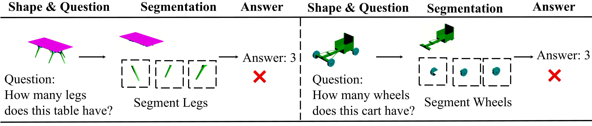
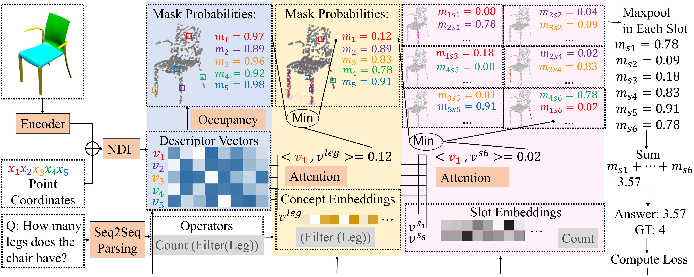

Abstract
In this paper, we address the challenging problem of 3D concept grounding (i.e. segmenting and learning visual concepts) by looking at RGBD images and reasoning about paired questions and answers. Existing visual reasoning approaches typically utilize supervised methods to extract 2D segmentation masks on which concepts are grounded. In contrast, humans are capable of grounding concepts on the underlying 3D representation of images. However, traditionally inferred 3D representations (e.g. point clouds, voxelgrids and meshes) cannot capture continuous 3D features flexibly, thus making it challenging to ground concepts to 3D regions based on the language description of the object being referred to. To address both issues, we propose to leverage the continuous, differentiable nature of neural fields to segment and learn concepts. Specifically, each 3D coordinate in a scene is represented as a high dimensional descriptor. Concept grounding can then be performed by computing the similarity between the descriptor vector of a 3D coordinate and the vector embedding of a language concept, which enables segmentations and concept learning to be jointly learned on neural fields in a differentiable fashion. As a result, both 3D semantic and instance segmentations can emerge directly from question answering supervision using a set of defined neural operators on top of neural fields (e.g. filtering and counting). Experimental results show that our proposed framework outperforms unsupervised / language-mediated segmentation models on semantic and instance segmentation tasks, as well as outperforms existing models on the challenging 3D aware visual reasoning tasks. Furthermore, our framework can generalize well to unseen shape categories and real scans.

Results
Reasoning and Concept Grounding
Given an input image of a shape and a question, we first parse the question into steps of operators. We visualize the set of points being referred to by the operator via highlighting the regions where mask probabilities > 0.5. As is shown,our 3D-CG can make reference to the right set of coordinates, thus correctly answering the questions.
Segmentation
CVX and BAE are unsupervised segmentaton methods. CVX+L and BAE+L are language-mediated methods which utilize question answering loss to finetune the segmentation module. 3D-CG has better performances in both semantic and instance segmentations, while other methods suffer from merging parts or segmenting a part into multiple parts.

Generalization
Our 3D-CG can also generalize well to unseen categories and real scans.